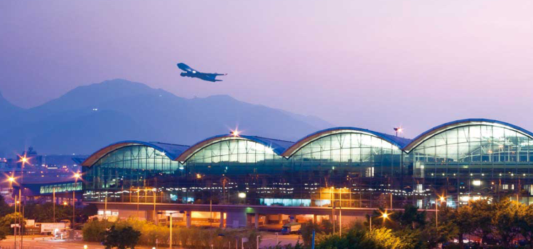
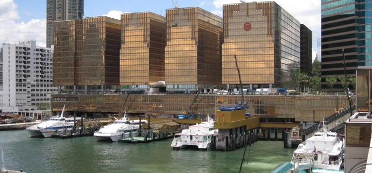

中国飞机航线
香港是亚洲的国际航空枢纽，航线贯通内地个省市，您可乘飞机从出发地到达位于大屿山的香港国际机场，走出飞机舱后沿着指示牌前往入境大堂过海关，完成入境手续后，便可到行李认领大堂提取行李，然后可选乘多种交通工具到达市区，包括机场快线、公共巴士和计程车。
香港国际机场

地址：香港大屿山香港国际机场翔天路1号
查询电话：+852 2181 8888
网站：
https://www.hongkongairport.com/chi/index.html
渡轮
若您来自于珠江三角口岸城市，如中山、佛山、珠海等，可选乘渡轮从内地港口到香港的中国客运码头及港澳客运码头。

中国客运码头
地址：香港尖沙咀广东道33号
查询电话：+ 852 2738 2902
前往方式：港铁尖沙咀站A1出口后步行700米
港澳码头
地址：香港上环干诺道中 200 号信德中心
查询电话：+ 852 2547 4386
前往方式：港铁上环站D出口步行400米
港铁
如您由深圳前往香港，最方便的交通就是经深圳罗湖口岸，过关后搭乘香港港铁东铁线由罗湖站前往市区，或者经福田口岸搭乘香港港铁东铁线由落马洲站前往市区，无论您是从那个口岸过关，搭乘的港铁都是开往红磡方向。

香港铁路有限公司
官网：http://www.mtr.com.hk/
查询电话：+852 2881 8888
深圳罗湖口岸
地址：广东省深圳市罗湖区人民南路（深圳罗湖商业中心南侧）
前往方式：乘坐深圳地铁1号罗宝线到罗湖站下车
深圳福田口岸
地址：深圳市福田区裕亨路(福田保税区东侧)
前往方式：乘坐深圳地铁4号线福田口岸站下车
城际直通火车
若您由广东省城市（深圳除外）赴港，最方便快捷的方式实属粤港直通火车，每天来往香港红磡火车站、常平、广州东、佛山，车程因地点而异，最远以佛山为终点站，全程约3小时。所有终点站均设有出入境管制站以供旅客办理相关手续。
如您由北京或上海赴港，也可选乘京九直通火车或沪九直通火车到香港红磡火车站，京九直通火车全程约24小时，而沪九直通火车则需约19小时15分钟。
香港铁路有限公司城际直通车
地址：香港东铁线红磡站内
查询电话：+852 2947 7888
官方网站（可网上购票）：
http://www.it3.mtr.com.hk/b2c/
跨境巴士
无可置疑，最实惠的抵达方式是乘坐跨境巴士。每天都有多家跨境巴士公司，安排车从广东、广西等城市接载旅客到香港各区。
跨境巴士公司线路信息请查询各公司官网：
香港中旅汽车服务：http://www.hkctsbus.com/
环岛旅运：http://www.trans-island.com.hk/zh/
永东直通巴士：https://www.eebus.com/
粤港汽车：http://www.gdhkmtc.cn/